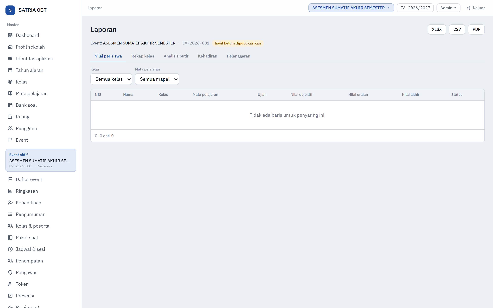

10. Hasil & laporan
Menerbitkan nilai, mengekspor laporan, dan membaca jejak siapa mengubah apa.
Publikasi hasil

Nilai tidak terlihat siswa sampai Anda menerbitkannya. Publikasi bekerja per event: satu tekanan menampilkan seluruh ujian di dalamnya.
- Publikasikan — hasil mulai terlihat siswa.
- Tarik publikasi — mencabutnya kembali, dan sekaligus membuka kunci koreksi.
- Kunci koreksi — menghentikan perubahan nilai tanpa menarik publikasinya.
- Kirim pengumuman — memberi tahu siswa bahwa nilainya sudah bisa dilihat.
- Hitung ulang — memperbaiki angka setelah kunci jawaban dibetulkan.
Mengatur apa yang terlihat
Setelah dipublikasikan, dua saklar menentukan apa yang boleh dibaca siswa: nilai objektifnya saja atau beserta pembahasan. Keduanya bisa diubah kapan saja — selama publikasinya masih terbuka.
Laporan

Laporan dikelompokkan menurut pertanyaan yang hendak dijawab:
- Nilai per siswa — daftar lengkap dengan seluruh nilainya.
- Rekap kelas — rata-rata dan sebaran per kelas.
- Analisis butir — soal mana yang paling banyak dijawab salah. Berguna untuk menilai mutu soal, bukan mutu siswa.
- Kehadiran — rekap presensi.
- Pelanggaran — kejadian selama ujian berlangsung.
Tiga format ekspor: XLSX untuk diolah, CSV untuk dipindah ke sistem lain, dan PDF untuk diserahkan atau diarsipkan.
Log aktivitas

Log mencatat tindakan yang mengubah data: siapa, kapan, dari alamat IP mana. Termasuk tindakan dari bab ini — publikasi, penarikan, reset nilai, pembukaan kunci.
Pakai Saring untuk mempersempit menurut aktor, aksi, atau rentang waktu, lalu Ekspor bila perlu diserahkan sebagai bukti.
Setelah ujian selesai
-
Pastikan seluruh sesi berstatus Selesai. Event berpindah ke Selesai sendiri setelah semua sesinya tuntas.
-
Periksa kolom Uraian di laman publikasi. Bila masih ada yang menunggu, koordinasikan dengan guru mapelnya.
-
Publikasikan, lalu beri tahu siswa.
-
Ekspor laporan yang dibutuhkan, lalu arsipkan eventnya. Mengarsipkan tidak menyembunyikan nilainya dari siswa — ia hanya menghentikan event itu tampil sebagai kegiatan aktif.